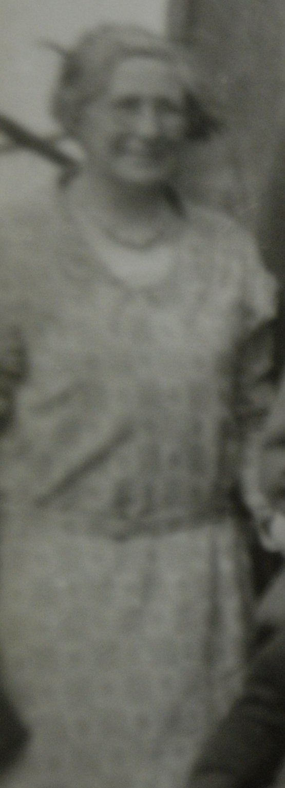
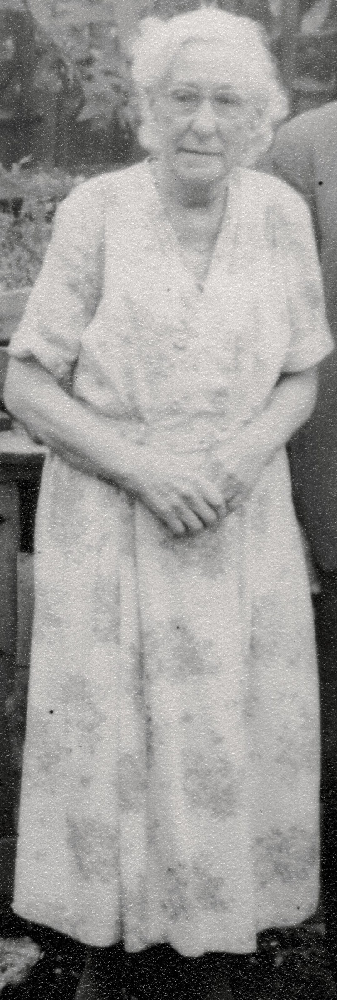

Elizabeth Ellen Cowell (née Russell) 1877 - 1959
[ Home ] | [ Calendar ] | [ Surnames Index ] | [ Census Index ] | [ Family History ]Elizabeth Russell, the wife of Charles Percy Cowell (the great-uncle of Nigel Horne), was born in Bridport, Dorset, England on Mar 5, 18771,2,3, was baptized there on Apr 15, 1877 and married Charles (a newsagent with whom she had 4 children: Charles John, James Henry Norman, Elizabeth Emma and Albert Percy) at All Saints Church, Birchington, Kent, England on Oct 29, 19015.
During her life, she was living at Streele Cottages, Billingshurst, Sussex, England on Apr 2, 19116; and on Saint Stephen, Murina Avenue, Bognor Regis, West Sussex, England on Sep 29, 19392.
She died on Mar 30, 1959 in Chichester, Sussex, England4.
Children
- Charles John was born on Sep 15, 1901
- James Henry Norman was born on Jun 20, 1904
- Elizabeth Emma was born on Jun 4, 1906
- Albert Percy was born on May 15, 1914
Citations
- 1911 England Census Online publication - Provo, UT, USA: Ancestry.com Operations, Inc., 2011.Original data - Census Returns of England and Wales, 1911. Kew, Surrey, England: The National Archives of the UK (TNA), 1911. Data imaged from the National Archives, London, England.
- 1939 Register - Findmypast (was recorded at this address)
- England & Wales, FreeBMD Birth Index, 1837-1915 Online publication - Provo, UT, USA: The Generations Network, Inc., 2006.Original data - General Register Office. England and Wales Civil Registration Indexes. London, England: General Register Office. © Crown copyright. Published by permission of the Cont
- England & Wales, Death Index: 1984-2005 Online publication - Provo, UT, USA: The Generations Network, Inc., 2007.Original data - General Register Office. England and Wales Civil Registration Indexes. London, England: General Register Office. © Crown copyright. Published by permission of the Cont
- England & Wales, FreeBMD Marriage Index: 1837-1915 Online publication - Provo, UT, USA: The Generations Network, Inc., 2006.Original data - General Register Office. England and Wales Civil Registration Indexes. London, England: General Register Office. © Crown copyright. Published by permission of the Cont
- 1911 Census for England & Wales - Findmypast (was age 35 and the wife of the head of the household)
Media
Elizabeth Ellen Russell

Elizabeth Ellen Russell - 2

England & Wales marriages 1837-2008 - BMD/M/1901/4/AZ/000333/015
Canterbury Marriages - GBPRS/CANT/M/97056079/2
Canterbury Marriage Banns - GBPRS/CANT/M/94074833/2
England & Wales births 1837-2006 - BMD/B/1877/2/AZ/000496/054
1939 Register Transcription - TNA-R39-2577-2577A-011-37
England & Wales deaths 1837-2007 - BMD/D/1959/2/AZ/000198/120
1911 Census for England & Wales - GBC/1911/RG14/05302/0043/2
Family Tree
Generated by ged2site. Last updated on Jun 11, 2024